COMPUTER PROBLEMS 6.1
\(\def\ds{\displaystyle} \)
1 The Euler's Method approximations can be calculated with Program 6.1,
after placing the right-hand side \(f(t,y)\) of the differential equations
into the ydot function of the code.
\[\text{ (a)}\ \ \begin{array}{ccc}
t_i&w_i&\text{error}\\
0.0& 1.0000& 0.0000\\
0.1& 1.0000& 0.0050\\
0.2& 1.0100& 0.0100\\
0.3& 1.0300& 0.0150\\
0.4& 1.0600& 0.0200\\
0.5& 1.1000& 0.0250\\
0.6& 1.1500& 0.0300\\
0.7& 1.2100& 0.0350\\
0.8& 1.2800& 0.0400\\
0.9& 1.3600& 0.0450\\
1.0& 1.4500& 0.0500\\
\end{array} \ \ \ \ \text{ (b)}\ \
\begin{array}{ccc}
t_i&w_i&\text{error}\\
0.0& 1.0000& 0.0000\\
0.1& 1.0000& 0.0003\\
0.2& 1.0010& 0.0017\\
0.3& 1.0050& 0.0040\\
0.4& 1.0140& 0.0075\\
0.5& 1.0303& 0.0123\\
0.6& 1.0560& 0.0186\\
0.7& 1.0940& 0.0271\\
0.8& 1.1477& 0.0384\\
0.9& 1.2211& 0.0540\\
1.0& 1.3200& 0.0756\\
\end{array}\ \ \ \
\text{ (c)}\ \ \begin{array}{ccc}
t_i&w_i&\text{error}\\
0.0& 1.0000& 0.0000\\
0.1& 1.2000& 0.0337\\
0.2& 1.4640& 0.0887\\
0.3& 1.8154& 0.1784\\
0.4& 2.2874& 0.3243\\
0.5& 2.9278& 0.5625\\
0.6& 3.8062& 0.9527\\
0.7& 5.0241& 1.5952\\
0.8& 6.7323& 2.6610\\
0.9& 9.1560& 4.4431\\
1.0& 12.6352& 7.4503\\
\end{array}\] \[ \text{ (d)}\ \
\begin{array}{ccc}
t_i&w_i&\text{error}\\
0.0& 1.0000& 0.0000\\
0.1& 1.0000& 0.0000\\
0.2& 1.0001& 0.0003\\
0.3& 1.0009& 0.0016\\
0.4& 1.0049& 0.0054\\
0.5& 1.0178& 0.0140\\
0.6& 1.0496& 0.0313\\
0.7& 1.1176& 0.0654\\
0.8& 1.2517& 0.1360\\
0.9& 1.5081& 0.2968\\
1.0& 2.0028& 0.7154\\
\end{array}\ \ \ \
\text{(e)} \ \ \begin{array}{ccc}
t_i&w_i&\text{error}\\
0.0& 1.0000& 0.0000\\
0.1& 1.1000& 0.0086\\
0.2& 1.1826& 0.0130\\
0.3& 1.2541& 0.0156\\
0.4& 1.3177& 0.0171\\
0.5& 1.3753& 0.0181\\
0.6& 1.4282 & 0.0187\\
0.7& 1.4772& 0.0191\\
0.8& 1.5230& 0.0193\\
0.9& 1.5661& 0.0195\\
1.0& 1.6069& 0.0195\\
\end{array} \ \ \ \ \text{ (f)}\ \
\begin{array}{ccc}
t_i&w_i&\text{error}\\
0.0& 1.0000& 0.0000\\
0.1& 1.0000& 0.0000\\
0.2& 1.0001& 0.0003\\
0.3& 1.0009& 0.0011\\
0.4& 1.0036& 0.0028\\
0.5& 1.0099& 0.0054\\
0.6& 1.0222& 0.0092\\
0.7& 1.0429& 0.0139\\
0.8& 1.0744& 0.0190\\
0.9& 1.1188& 0.0239\\
1.0& 1.1770& 0.0281\\
\end{array}
\]
3 Program 6.1 can be used to generate the plots. The correct solution
from Exercise 4 must be added. The solutions are shown below.
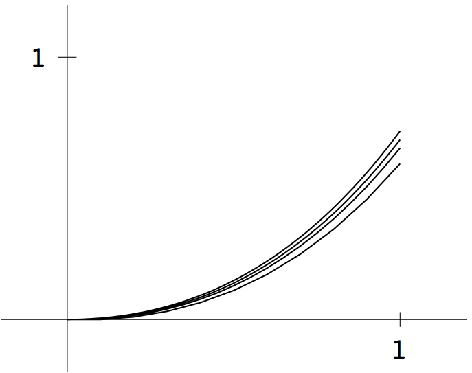
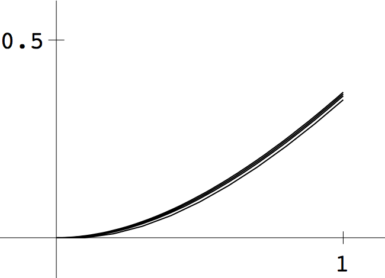
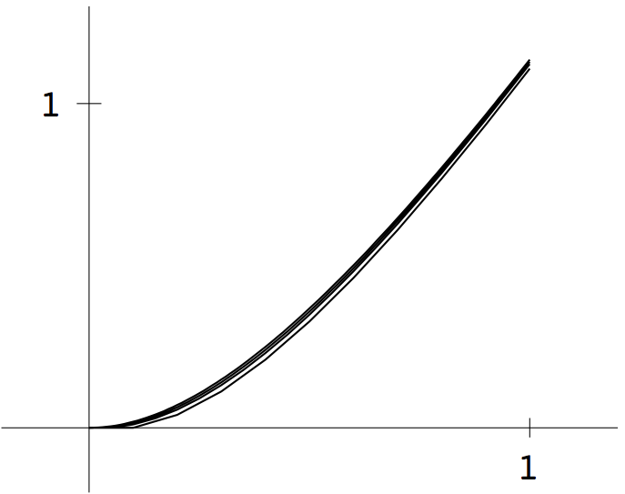
5 Euler's Method is run for the six step sizes \(h\), and the error is plotted
on a loglog graph.
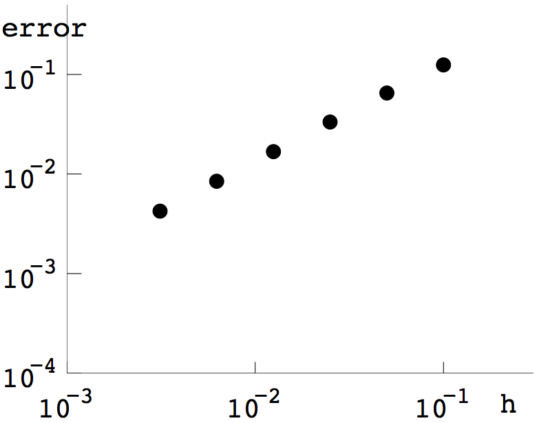
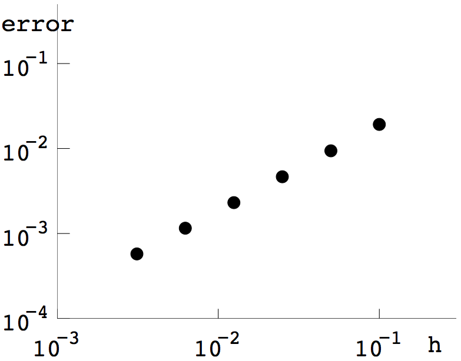
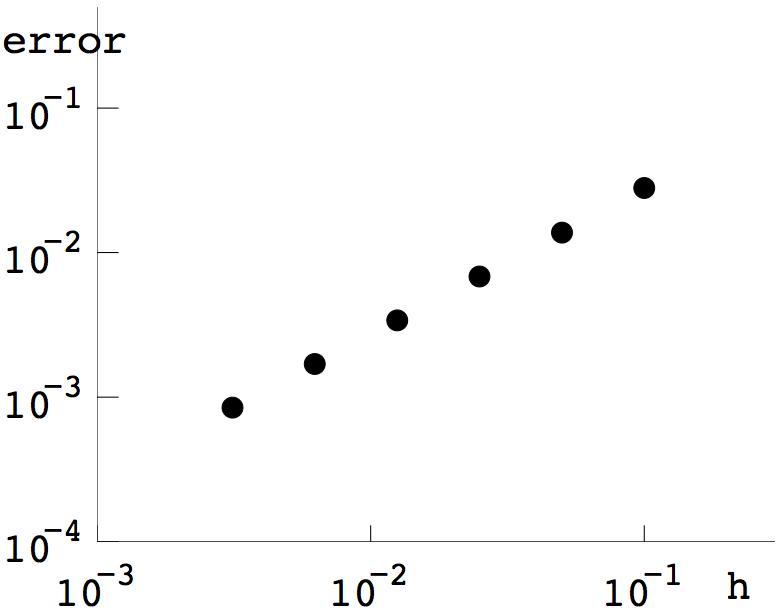
7 Program 6.1 can be used to generate the plots, with initial conditions (a) \(y_0=0\) and (b) \(y_0=1/2\). The correct solution from Exercise 6.1.7 is added (thicker curve). The solutions are shown below.
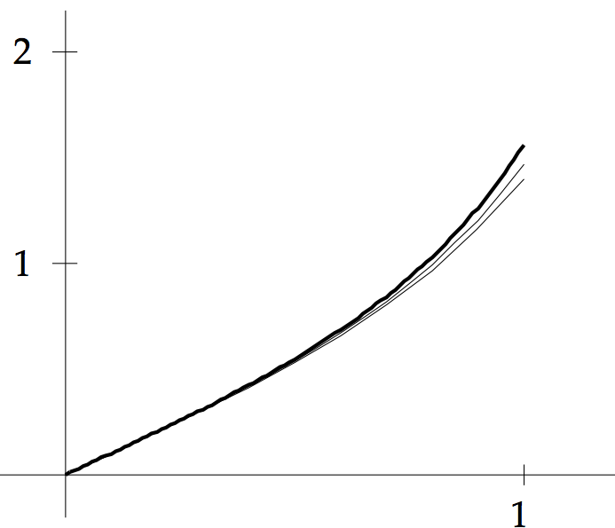
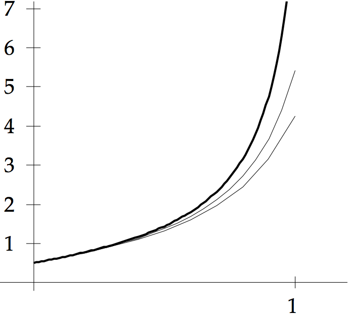
9 The exact solution (blue curve) along with the approximate solution
with step size 0.1 (red curve) is shown
in the top two figures for parts (a) and (b), respectively.
The loglog plot of errors versus step size is shown in the bottom two figures.
 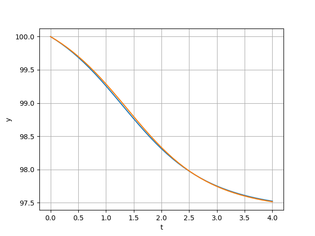
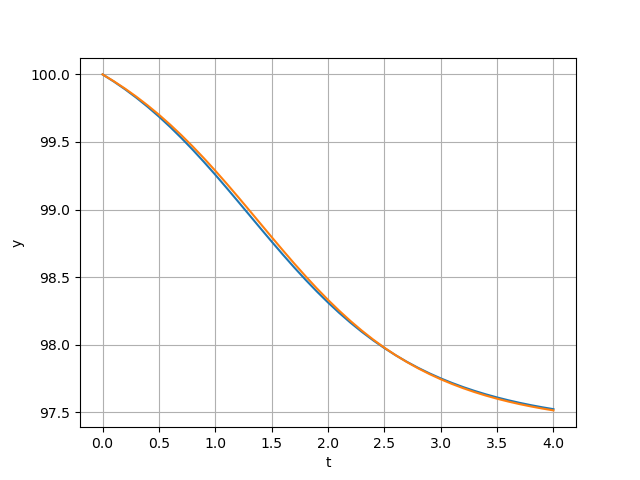
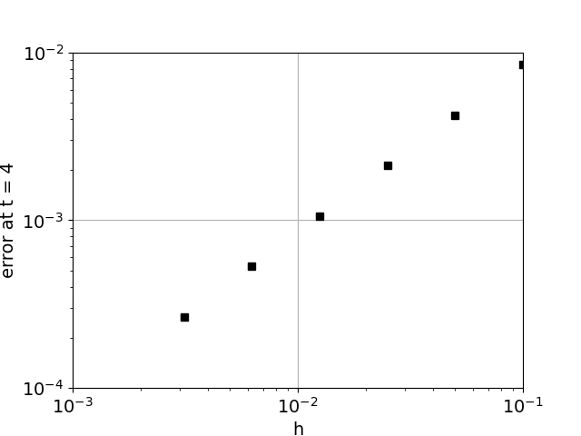
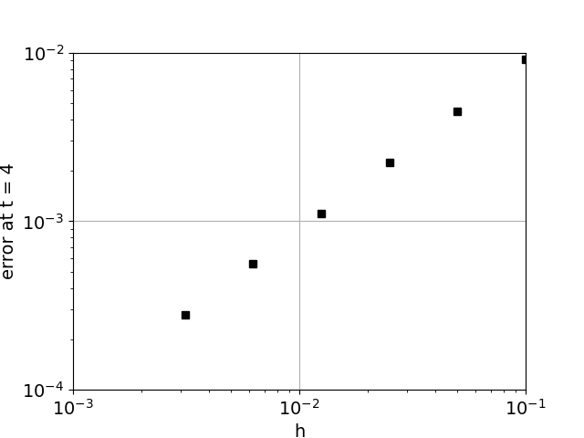
11 (a) The exact solution from Exercise 6.1.17 with initial condition \(y(0) = 1\)
is the top curve in blue, in the figure below. The 6 red curves below the blue curv
are the approximations for step size \(0.1\times 2^{-i}\) for \( 0 \leq i \leq 5.\)
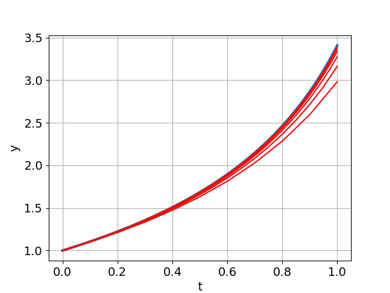
11 (b) Same as (a), but using initial condition \(y(0) = \sqrt{3}\) (see Exercise 6.1.17).